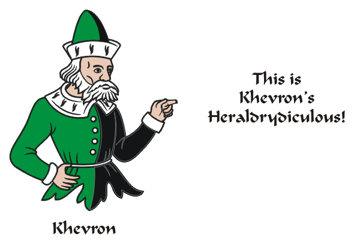
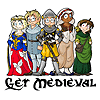
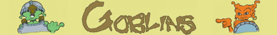
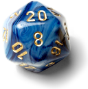

In each frame, there may be a good or bad example of heraldry,
Start where you left off on the menu to the left.
Northwatch the Newsletter of the SCA Kingdom of Northshield
Other on-Topic Web-Comics/Fun Links
SCA Light-Bulb/Candle/Lantern Jokes
The Lions Road podcast

Kasiopea Art: Boromir as a child
The Quarter - Period Parody Publication
Heretical Herald - light hearted educational publication
Heraldry Songs, Poems, Pictures,
Stories, Etc on Baron Modar's Heraldry Page
Tigger Heraldry by Seamas Mac Daibhid
Other recommended off-Topic Web-Comics


An Heraldic Cartoon to learn what's 'Good', 'Not so good' or "Impossible" heraldry.
I hope you may get a chuckle out of these, and maybe learn something too.
a pun or exaggeration of heraldic elements or style,
an attempt to blazon the device and a follow-up explanation or comment.
So, Tripod, my Host went down permanently in April, so this site is being re-built.
I'm starting at the beginning. The first 300 should be available quickly.(July, 2026)
Mostly it'll be a grind, but there's some things that may take more time.
OR, (New Feature) - See 50 at a time in the Comic Finder!
Now Published in
Khevron's Heraldrydiculous Cafe Press Shop Page
It seems Cafepress.com has gone the way of the dodo, so there's that.

Weekly SCA Podcast Bringing You History, Events and Fun From Around The Known World. (from An Tir)
Get Medieval - Sci-fi and 14th Century History
Livejournal Comic
Unusual RPG serial from the Goblin's perspective
DM of the Rings - If Lord of the Rings were played now by gamers who'd never heard of it.